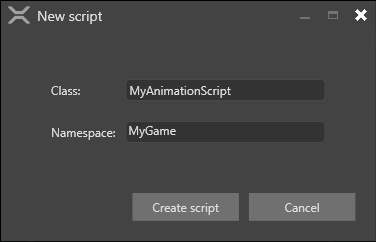

Animation scripts
Warning
Приносим свои извинения за неудобства. Для этой страницы нет перевода на русский язык. Она будет отображаться на английском языке.
Intermediate Programmer
Animations are controlled using scripts.
You can add an AnimationComponent to an entity and set up its parameters in Game Studio. The AnimationComponent class is designed to be used mainly from a script.
The more useful properties include:
| Property | Description |
|---|---|
| Animations | Gets the animation clips associated with this AnimationComponent |
| BlendTreeBuilder | Gets or sets animation blend tree builder. Note you can create custom blend trees; for more information, see Custom blend tree |
| PlayingAnimations | Gets the list of active animations. Use it to customize your startup animations. The playing animations are updated automatically by the animation processor, so be careful when changing the list or keeping a reference to a playing animation |
Note
Animation clips you reference in scripts must be added to the same entity under the AnimationComponent.
For more information, see Set up animations.
Use the pre-built AnimationStart script
Stride includes a pre-built AnimationStart script. You can use this script as a template to write your own animation scripts.
To use the AnimationStart script:
In the Asset View (bottom pane by default), click Add asset.
Choose Add asset > Scripts > Animation start.

Specify a name for the script and click Create script.

3a. If Game Studio asks if you want to save your script, click Save script.
3b. If Game Studio asks if you want to reload the assemblies, click Reload assemblies.
Edit the script as necessary and save it.
Example animation script
This sample script assigns a simple animation to a character based on its walking speed.
using Stride.Engine;
namespace AdditiveAnimation
{
public class AnimationClipExample : SyncScript
{
public float MovementSpeed { get; set; } = 0f;
private float walkingSpeedLimit = 1.0f;
// Assuming the script is attached to an entity which has an animation component
private AnimationComponent animationComponent;
public override void Start()
{
// Cache some variables we'll need later
animationComponent = Entity.Get<AnimationComponent>();
animationComponent.Play("Idle");
}
protected void PlayAnimation(string name)
{
if (!animationComponent.IsPlaying(name))
animationComponent.Play(name);
}
public override void Update()
{
if (MovementSpeed <= 0)
{
PlayAnimation("Idle");
}
else if (MovementSpeed <= walkingSpeedLimit)
{
PlayAnimation("Walk");
}
else
{
PlayAnimation("Run");
}
}
}
}
Override the animation blend tree
You can also override the animation blend tree and do all animation blending in the script. The templates First-person shooter, Third-person platformer and Top-down RPG, which use some advanced techniques, are examples of how to do this. For more information, see custom blend trees.